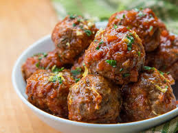

Meatballs

Cooked seasoned round meat balls!
Ingredients
-
Ground meat: This meatball recipe uses a blend of ground beef, ground veal, and ground pork. You can switch it up depending on what you have on hand.
-
Seasonings and herbs: These meatballs are flavored with fresh garlic, fresh Italian flat-leaf parsley, and ground black pepper.
-
Eggs: Eggs keep the meatballs from drying out and they act as a binding agent, which means they help hold the ingredients together.
-
Cheese: You'll need a cup of freshly grated Romano cheese. If you can, avoid the pre-grated stuff for this recipe.
-
Italian bread: Slightly stale Italian bread is preferable. If your bread feels soft, try letting it sit out overnight.
-
Water: Slowly add water to the mixture before you roll the meatballs. It'll keep the meatballs nice and moist. Some reviewers prefer to use milk.
-
Olive oil: Fry the meatballs in olive oil.
Preparation steps
-
Combine the first eight ingredients in a bowl.
-
Add the bread crumbs and slowly add the water.
-
Shape the mixture into meatballs.
-
Fry the meatballs until they're all brown and crisp.